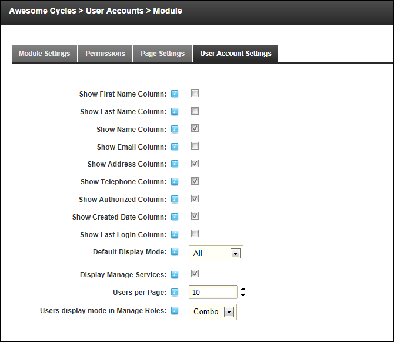

Configuring User Account Settings
How to select the default layout of the User Accounts module and choose the user information that is displayed on the User Accounts module. The Username, Display Name, Address, Telephone, Created Date and Authorized columns are displayed on this module by default. Additional user information that can be displayed on the User Accounts module are the First Name, Last Name, Email and Last Login columns.
- Navigate to Admin > User Accounts.
-
- Select the User Accounts Settings tab.
- Optional. Check the check box beside each field to be displayed on the User Accounts module.
- Show First Name Column. This column is hidden by default.
- Show Last Name Column. This column is hidden by default.
- Show Name Column. This column is visible by default.
- Show Email Column. This column is hidden by default.
- Show Address Column. This column is displayed by default.
- Show Telephone Column. This column is visible by default.
- Show Authorized Column. This column is visible by default.
- Show Created Date Column. This column is visible by default.
- Show Last Login Column. This column is hidden by default.
- At Default Display Mode, select the records that are displayed on the User Accounts module by default:
- All: Select to display user accounts in alpha-numerical order. E.g. 1,2,3,a,b,c.
- First Letter: Select to display user accounts in alphabetical order. E.g. a,b,c. Tip: If this option is selected, you will need to click the All link to view usernames that begin with a number.
- None: Select to hide all user account records.
- At Display Manage Services, select to display the Manage Services section in the user profile.
- At Users per Page, click the Up and Down icons to set the number of records that are displayed on each page of the User Accounts module. The default setting is 10 records.
- At Users Display Mode in Manage Roles, select from these options to set the Manage Users page of the Security Roles module:
- Combo: Select to display all usernames alphabetically in a drop down list. This is the default settings.
- TextBox: Select to display a text box where the required username can be entered and then validated as correct.

-